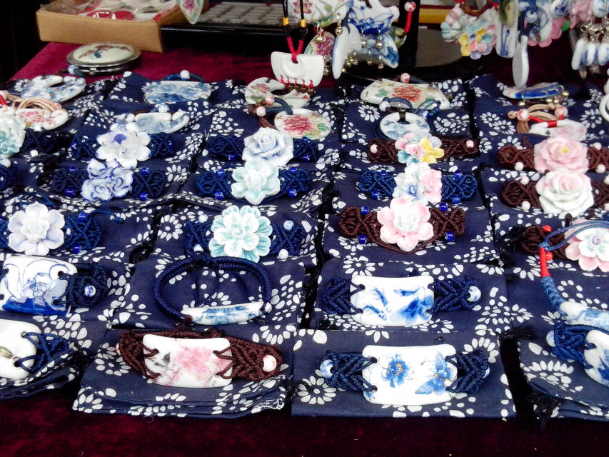

瓷手环
陶瓷手环有光泽、高硬度、不生锈变色、不沾污、化学性能稳定等优点使得陶瓷材料成为首饰界的新宠，使用了高科技陶瓷复合材料制造的陶瓷智能穿戴手环，拥有耐锈蚀和耐热性能好，具有高硬度，不易磨损，永不褪色，不损肌肤的优点。 高科技陶瓷，它是以二氧化锆为主的矿物粉末（粉末颗粒直径不足1微米）在1500°C左右的高温中烧结而成。它和中国传统的陶瓷制品一样，具有稳定的物理和化学性质，防水防高温防褪色抗腐蚀，且表面温润无瑕，能够散发柔美的自然光泽。与不锈钢材料的手环相比，陶瓷手环的重量减轻了大约60%，其硬度约为不锈钢材料的10倍，而且耐锈蚀和耐热性能好，具有高硬度，不易磨损，永不退色，不损肌肤的优点。